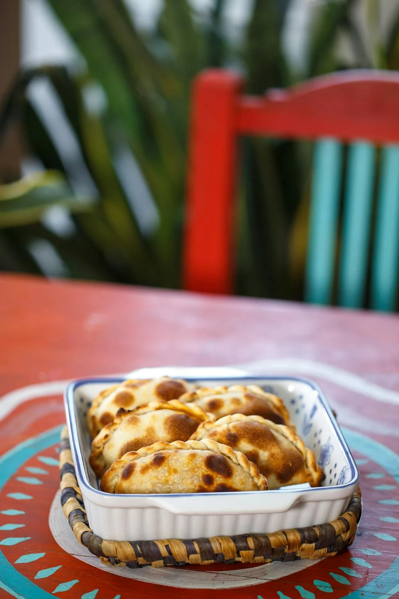

WANDER WOMEN
WANDER WOMEN
BUENOS AIRES Guide
Dance till dawn

Top Tourist Spots
Buenos Aires is a city full of history, culture, and charm. From its majestic architecture to its rich cultural heritage, these spots are a must-see for any visitor.
Ateneo Grand Splendid
Once a theater, this stunning bookstore is now one of the most beautiful in the world. With its grand architecture and bookshelves stretching up to the ceiling, it’s a perfect blend of culture and history.
La Recolecta Cemetery
This iconic cemetery is known for its beautiful and elaborate mausoleums, including the tomb of Eva Perón. It’s a peaceful place to reflect on Argentina’s history and admire impressive sculptures.
Plaza de Mayo
One of Buenos Aires' most significant landmarks, Plaza de Mayo is where the city's most important historical events took place. It’s surrounded by important buildings such as the Casa Rosada and the Metropolitan Cathedral.
Casa Rosada
The iconic pink presidential palace, Casa Rosada, is a symbol of Argentina’s political history. Visitors can take guided tours to learn about the country’s past and its political significance.
Museo Sitio de Memoria ESMA
Museo Sitio de Memoria ESMA is a museum dedicated to preserving the memory of those who disappeared during Argentina’s Dirty War. The exhibits provide an emotional and powerful insight into this dark period of history.
Cultural Encounters
From its vibrant nightlife to its traditional customs, the city offers a rich cultural experience that embraces its deep-rooted traditions while pushing the boundaries of modernity.
Party starts at 2!
Buenos Aires is famous for its late-night party scene, with clubs and bars opening late into the night. The city's nightlife kicks off around midnight and often goes until the early morning hours. From tango clubs to electronic music venues, the city offers a wide variety of options for night owls. Many places, like Palermo and San Telmo, are known for their vibrant atmosphere, and the locals’ love for dancing makes the nightlife an unmissable experience.
Mate
Mate (pronounced 'ma-teh') is an iconic Argentine drink made from yerba mate leaves. It's a social beverage enjoyed by friends, families, and colleagues alike. Sharing mate is a significant part of Argentine culture and is often seen as a symbol of friendship and togetherness. Locals carry their mate gourds and thermos everywhere, and it’s common to see people sipping mate in parks, on the streets, or in cafes.
Abuelas de Plaza de Mayo
The Abuelas de Plaza de Mayo (Grandmothers of the Plaza de Mayo) is an iconic group of women who played a crucial role in Argentina’s history. They’ve been advocating for justice for those who disappeared during the country’s military dictatorship (1976-1983). Every Thursday, they gather in the Plaza de Mayo to demand answers, and their fight for human rights continues to inspire many.
Tango
Tango is an essential part of Buenos Aires’ cultural identity. The dance is a passion that unites the city’s people in both traditional milongas (tango clubs) and modern performances. Visitors can enjoy tango shows or even take a tango lesson to experience this fiery dance. Beyond tango, Buenos Aires also boasts a rich cultural tradition, with theaters, music, and street art playing key roles in its cultural landscape.
Gastronomic Delights
A vibrant culinary scene with influences from its Italian, Spanish, and indigenous heritage. Whether you're tasting delicious street food or dining at world-class restaurants, the city is a haven for food lovers. *All can be veganized or vegetarianized.*
To Eat
- Asado: A traditional Argentine barbecue, where various cuts of beef are grilled over an open flame. Asado is a social event, often accompanied by friends and family, and is a staple of Argentine cuisine.
- Empanadas:  These savory pastries are filled with a variety of ingredients, such as beef, chicken, or cheese, and then baked or fried. Empanadas are a popular snack or appetizer across the country.
- Milanesa: A breaded and fried meat cutlet, similar to schnitzel, often made from beef or chicken. Milanesa is commonly served with mashed potatoes or a side salad.
- Choripán: A beloved street food consisting of a grilled chorizo sausage served in a bun, often topped with chimichurri sauce, a tangy mix of herbs and spices.
- Provoleta: A delicious, grilled cheese dish, often served as a starter. Provoleta is made from provolone cheese, which is melted over the grill and typically served with oregano and chili flakes.
- Dulce de Leche: A rich and creamy caramel spread made from sweetened milk, used in a variety of desserts, including alfajores (cookies filled with dulce de leche) and cakes.
Restaurants
- La Reverde parrillita vegana
- Craft vegan bakery
- Le Panem
- Konu Bar
Where to Stay
From boutique hotels in Palermo to luxurious stays in Recoleta, catering to travelers seeking everything from a historic experience to modern comforts.
Viajero Hostel Buenos Aires
Viajero Hostel is located in the heart of Buenos Aires, offering a comfortable and social atmosphere. Perfect for travelers on a budget, this hostel is known for its modern facilities, spacious rooms, and vibrant community spaces. It’s a great base for exploring the city’s attractions and is within walking distance to popular neighborhoods like Palermo and San Telmo.
Palermo
Palermo is one of the most popular neighborhoods in Buenos Aires, known for its trendy boutiques, bustling cafes, and lush parks. Whether you’re staying in a boutique hotel, Airbnb, or a luxury property, this area offers a variety of accommodations for all types of travelers. It’s a vibrant and artistic area perfect for those who enjoy nightlife and outdoor activities.
Recolecta
Recoleta is one of Buenos Aires’ most upscale and historic neighborhoods, featuring elegant hotels and charming boutique accommodations. The area is home to high-end shopping, luxury dining, and beautiful parks, including the iconic Recoleta Cemetery. It’s perfect for travelers who appreciate fine living, history, and a central location.
Souvenir Ideas
Things to remember Buenos Aires by:
Mate
Traditional Argentine tea made from the leaves of the yerba mate plant. It’s often shared among friends and family, symbolizing Argentine hospitality and social bonding.
Leather Goods
Buenos Aires is famous for its high-quality leather products, including jackets, bags, wallets, and belts. These handcrafted items make for a timeless and stylish souvenir.
Tango Memorabilia
Tango is a cultural symbol of Buenos Aires, and you can bring home tango-themed souvenirs like dance shoes, clothing, or CDs of traditional tango music.
Staying Safe
To do:
1: Have Fun
2: Stay Safe
Phone Safety
- Keep Your Phone Secure: Petty theft is common in busy areas like tourist attractions and public transport. Avoid using your phone in crowded spaces and always keep it in a secure pocket or bag. Consider using a phone pouch that’s hard to access from the outside.
- Avoid Flashy Displays of Wealth: Buenos Aires is a vibrant city, but like many large cities, it’s important to be discreet. Avoid flaunting expensive jewelry, high-end cameras, or large amounts of cash. Keep a low profile to minimize attention and reduce the risk of theft.
General Safety Tips
- Stay in Well-Lit Areas: Avoid walking through poorly lit streets, especially at night. Stick to areas with good visibility and where people are present.
- Use Licensed Taxis: Always opt for licensed taxis or rideshare services like Uber instead of hailing random cabs off the street. This ensures your safety during transportation.
- Keep an Eye on Your Belongings: Always be aware of your belongings, especially in crowded places like markets or public transport. Keep your bag zipped and close to you.
Stay Informed and Prepared
- Know Emergency Contacts: Keep a list of emergency contacts, including local authorities and your country's embassy or consulate.
- Trust Your Instincts: If a situation or area feels uncomfortable, trust your instincts and remove yourself from it. Prioritize your safety at all times.
Embassy and Contact Information
- Address: Av. Colombia 4300, (C1425GMN) Buenos Aires, Argentina
- Phone: +(54-11) 5777-4533
- Emergency After-Hours Phone: +(54-11) 5777-4354
- Fax: +(54-11) 5777-4240
- Email: BuenosAires-ACS@state.gov
- Website: U.S. Embassy Buenos Aires
Language
Buenasssss:
Practice
- ¿Dónde está...? (Where is...?)
- ¿Cuánto cuesta? (How much does it cost?)
- No entiendo. (I don't understand.)
- ¿Habla inglés? (Do you speak English?)
- ¡Buenos días! (Good morning!)
- ¡Buenas tardes! (Good afternoon!)
- ¡Buenas noches! (Good evening!)
- Gracias (Thank you)
- Por favor (Please)
- De nada (You're welcome)
- Perdón (Sorry)
- Che (Hey, buddy)
Language Learning Resources:
- Duolingo: A free app offering interactive lessons for beginners. [Learn Spanish on Duolingo](https://www.duolingo.com/course/es/en/Learn-Spanish)
- Babbel: Provides practical, real-world oriented lessons focusing on essential phrases. [Learn Spanish with Babbel](https://www.babbel.com/learn-spanish-online)
- Rosetta Stone: Offers immersive language learning with speech-recognition technology. [Learn Spanish with Rosetta Stone](https://www.rosettastone.com/learn-spanish/)